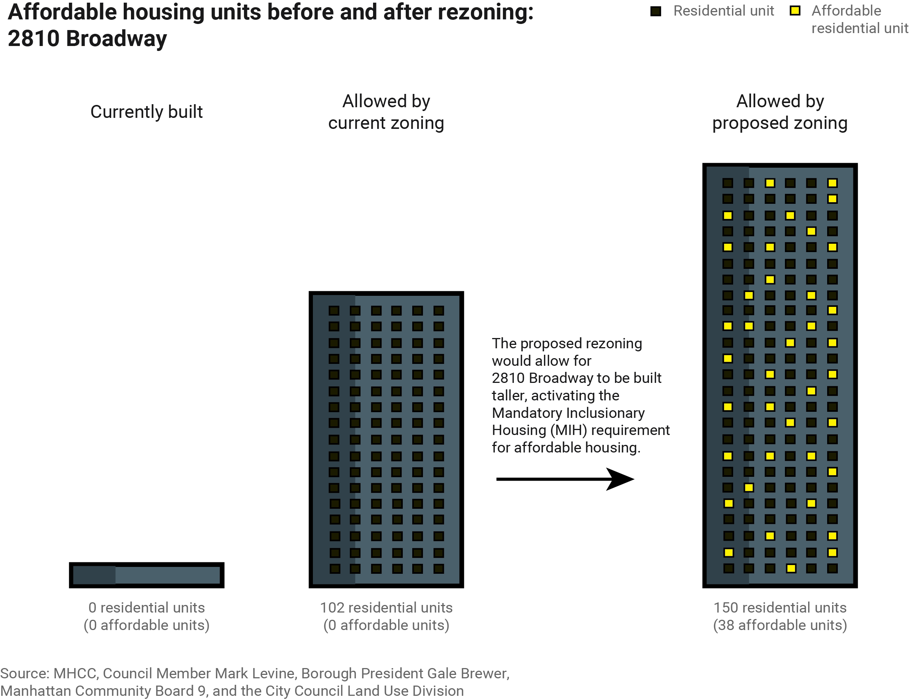
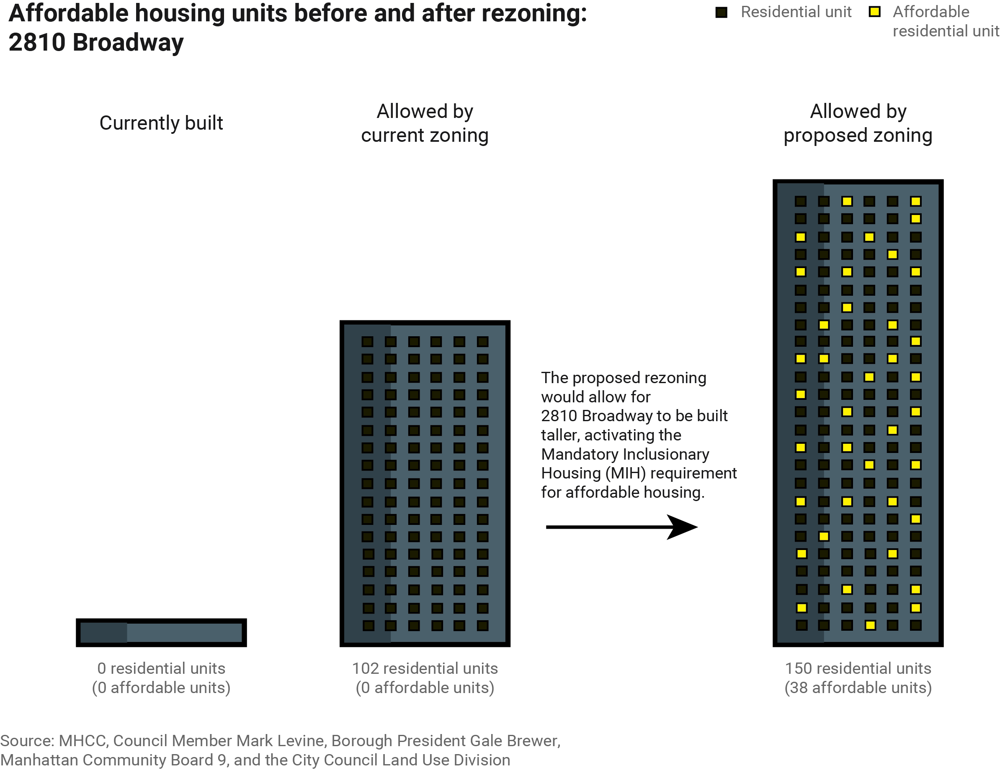
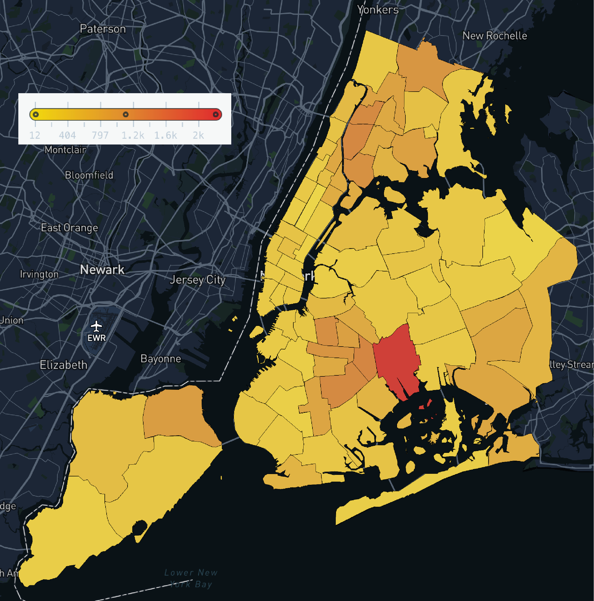
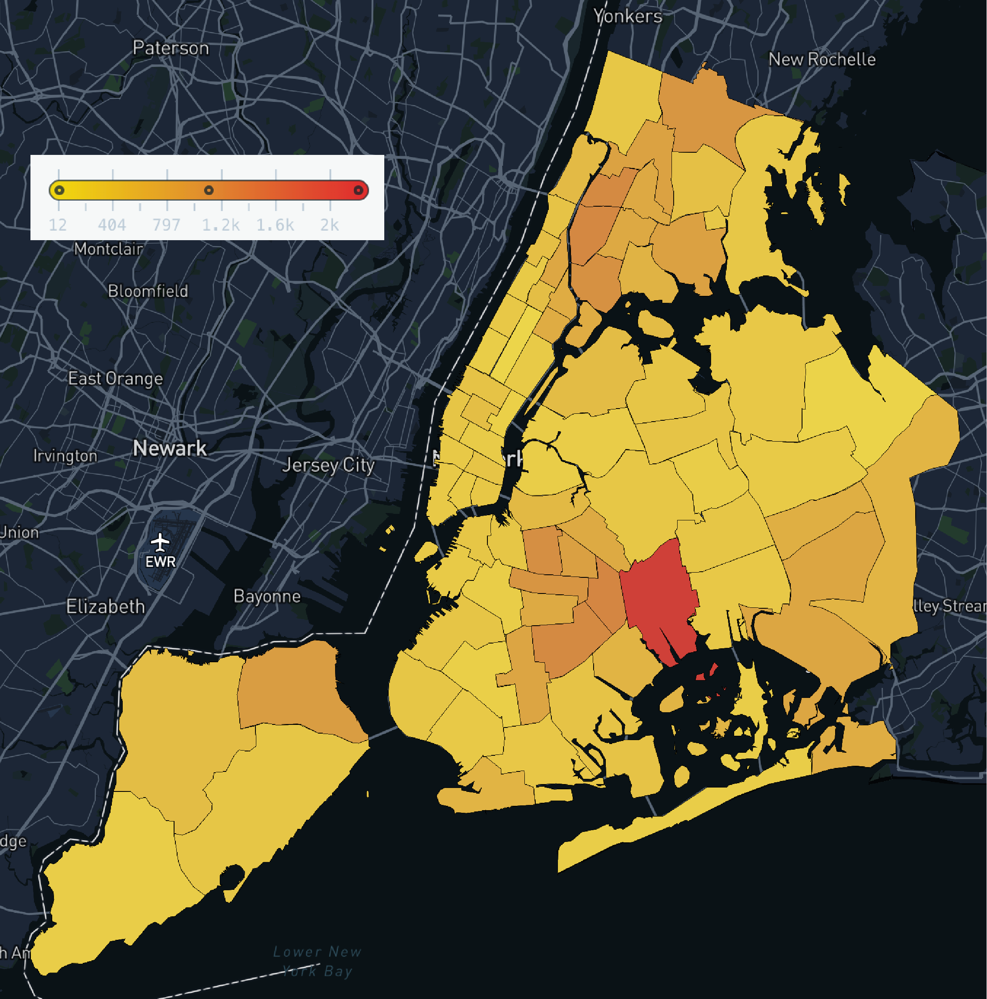

Morningside Heights Upzoning Proposal
These graphics explain the cause and potential impact for proposed rezoning in Morningside Heights, Manhattan. The first graphic shows how the rezoning would allow for more affordable housing units in the area, and the second maps where affordable housing units are currently. The rezoning proposal can be found here.
Tools Used: Adobe Illustrator, MapBox
April 2022
Diversity, Equity, and Inclusion Report 2022: Columbia Daily
Gender Distribution and Outside Employment across all departments of the Spectator Publishing Company in the 2021-2022 academic year. To be published in Spectator's annual DEI report.
Tools Used: Adobe Illustrator, RawGraphs
May 2022
 

Arrests and Allegations of Police Misconduct by NYC Precinct
While playing with open-source NYC data (OpenData and ProPublica), I found that the same police precinct was an outlier in number of arrests since 2013 (left) and in number of complaints against police officers filed between 1985 and 2020 (right). It would be interesting to further explore this potential relationship.
Tools Used: Adobe Illustrator, MapBox, Python, Pandas
March 2022

Stay Subway Safe
This project aimed to predict crowd size on NYC platforms at a given time of day to mitigate the spread of COVID-19. Using open-source data from the NYC MTA, I wrote an algorithm to report a risk level for individual platforms based on calculated crowd sizes and platform dimensions. This graph shows predicted risk level (0-4) for North- and South-bound trains at W. 116th Street station over the course of a given Saturday (24 hr clock). I wrote a walk-through of my team's work, found here.
Tools Used: MatPlotLib
August 2020